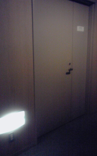
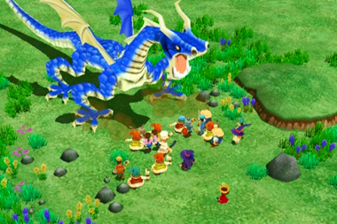

拝啓
豚インフルエンザもフェーズ６になり心配な昨今ですが、
王様物語ファンのみなさん、お変わりはありませんか？
どうぞお変わりなく、みなさんと一緒に「９月３日」が
迎えられる事を、こころよりお祈り申し上げます。
どうも、おはこんばんちわ。池田トムです。
王様物語では、プランニングとシナリオを担当し、ピンズで
メンタンピンチンイツリャンペーコーした活躍でした。
（※ドラは２つ乗っています。）
と、そんな感じで始まりましたが、今回この場をお借りして、
木村さんとの出会い～開発の血生臭いドラマをなるべく
オブラートに包んで、麻雀用語等を用いたわかりやすい例えを
交えつつ、恐悦ながらお話しさせて頂きます。
木村さんとはPS2のチュウリップ以来の知りあいで、
当時は雲の上のおじさんに後光が差したやうな存在でした。
ツーイーソー、といったところです。
（※鳴けば届かない事はない、夢のような存在です。）
幼い頃より私はゲームが好きで好きでしょうがなく、
友だちの家で、友だちがいないのに上がり込んでは
一人でゲームをするくらいのトンデモ坊やでした。
時は過ぎ１９９Ｘ年、全身の然るべき箇所から生える毛が
まんべんなく行き渡り、直毛では無い種類も生えては抜け
生えては抜けしてきたある時期の事、私はあるゲームと
運命的な出会いをしました。 それが、PSのmoonでした。
他のゲームが直毛であるならばmoonはまさに大人の毛。
左に右に思いもよらぬ形で複雑に表現されたその作品には
一種の『愛』が感じられる、ヘンテコ素敵ゲーでした。
今まで遊びであったゲームを「作ってみたい」方向へ
ベクトルを変えた、まさに人生を変える牽引力のある、
水割り行きずり古い傷～男と女のＬＯＶＥゲームでした。
時は過ぎ２００Ｘ年、全身の然るべき箇所 ～中略～
PS2のチュウリップにも、全身の毛が直毛になるほどの
愛を感じた私は、居てもたってもいられなくなり、
荒らしが混じる攻略ＢＢＳに、拙いコンタクトを試みました。
「ゲーム作ってます。今度企画みてちょ！（キャピキャピ♪）」
そんな感じだったと思います。
そして、なんと木村さんご本人からのご返信があったのです。
「なんぞ？ワレ。こわっぱがナンボのもんじゃい。
見せられるもんなら見せてみんしゃい。（怒）」
そんな感じだったと思います。
とにかく夢工場ドキドキパニック的に緊張していましたが、
その後もチャンスは２，３度ありました。
木村さんのお家でのティーパーティーの末席にお邪魔し、
空気を読まずに企画書を机に叩きつけた事もありました。
失礼な事も多々ありましたが、何とか知り合い代理見習い補佐
程度のギリギリの関係を保つ事ができ、挙げ句の果てには、
当時の木村さんの制作会社のチームメンバーにも入れさせて頂き、
とてつもないサイコホラーゲームを完成させたりしました。
（ニコ動では一部、ある意味盛り上がって頂き、感謝感激です。）
その時からゲーム制作に軽いめまいの症状を覚える事がある
心配な私ではありましたが、健康的なゲームでの復帰を願った
次作では、マーベラスさんから訪れたチャンス、Wii初の牧場物語の
完成でもって六割方復調。元気が出ました。
そんなこんなで和田さんにもお世話になった次第です。
さて、王様物語は以上の通り、肉体関係にも近い熱い関係を
持ったお二方のメンツが関わっている重要な作品でしたから、
もうそれはそれは適当には作れませんでした。
全身全霊、腰っ骨の骨の髄の髄のずっころばしまで踏ん張った
当作品は、その筋のゲーマーでもある私の自信作です。
皆様におかれましては、存分に地団駄を踏みつつお待ち頂いても
結構なクオリティとなっていますので、どうぞご期待下さい。
以上、数十行にも及ぶ駄文、曖昧な記憶の乱雑な引用、
また中盤より麻雀用語では無く若干"毛"に偏った例えの数々、
真にすみませんでした。
次回は、後編「ヘアーと開発と私。」をお送りします。
敬具
きむＰです。
さてさて、先週末から
王様物語開発現場をタイムマシンにのったつもりで
過去からふりかえっております。
それでは、先週の続きです。
【２００８年 ４月】
さらなる本格的テコイレ開始。
メインメンバーを福岡から呼び出して、カンヅメに。
ゲームシステムの構成や、レベルデザインの構成をトムちゃんと再検討。
マーベラスにある一室。まるでサイレント○ルに出てきそうな
ホラーっぽい倉庫部屋で酸欠になりながら、ミーティングしました。

（※これがその部屋の扉です。ぶ、ぶきみ・・・）「この部屋、なんか息苦しくないっすか」
「うん、霊が出るらしいよ」
「さぁ、霊なんか無視してゲーム考えよう」
「・・・・・・」
この頃にＮＰＣの反応マトリックスとか、ジョブとボスと
レベルデザインの見直し作戦が実行されました。
おもえば、ここに作品の分岐点があったんだよなぁ。
【２００８年 ５月】
ここらへんで、和田ＥＰから一言
「木村さん、福岡いって監督やってください。」
「はい！？でも私が東京にいなくなると、
たちゆかないこともありますが・・・大丈夫でしょうか・・」
「Ｐの仕事は一時停止してください。
福岡いって、現場をまわしてください！
こっちはドーンとまかせなさい！」
「はい、福岡いきます！住んできます！
ラーメン食べて、太ったら、うらみますよ！」
こんな会話があったとか、なかったとか。
【２００８年 ７月初旬】
現場到着したあとは、全員と個別ミーティング。
ＣＩＮＧの宮川さんや、トムと相談して
とにかく、ゲームつくるための環境を再構築。
関係者ほぼ全員でＣＩＮＧに引越し。開発内の組織整理。
能率をあげて、おのおのが力を発揮できるように、諸々整理。
（ここらへんが、５、６年前の僕だとやれなかったことなんだよな・・・
と自分で昔のことを思い出して泣く。）
「ゲーム作るのは面白いんだから～
疲れても楽しむんじゃ～い！
カッポレカッポレ～」
・・・と酔っ払い的な発言をしながら、ニュー王様開発室にて現場仕事開始。
たしか、この頃、若いプログラマーのセンスや思考に
感動したりもしたのを憶えてるなぁ。
【２００８年 ７月後半】
そのあと、信頼するプログラマー、ミスター・ナガサワを
ニッコリしながら福岡に誘導。
「福岡に無茶苦茶うまい、みずたきがあるんよ～」
「福岡にはメイド喫茶もアニメイトもあるよ～」
うまいものを食べさせて、必死で福岡のよさをアピール。
結局、彼も福岡に来ることに。「やったーやったー！」無邪気に喜びわし。
７月の終わりには合計３名のツワモノプログラマーが勢ぞろいして、
開発が勢いづく。王様ストライクチームですな。
無茶苦茶忙しいながらも、一度日曜に海にいった。
「きむＰ、おぼれないでくださいね」
「きむＰ、くらげにさされないでくださいね」
「福岡で開発すると、自転車で海にいけるんだ！すげー」
【２００８年 １０月】
ＴＧＳのステージでのみ 海外むけのＰＶ発表。
プレイアブル発表。
きむＰへたな英語でがんばる（笑）
しかも、それがYOUTUBEにあがってて、真っ赤になった。
なんていうか、レベルデザインの調整もまったくやれてなかったので
もう、なんていうかギリギリあそべるところだけ切り出して
披露しました。このときは、心から緊張しました。
作ってる途中のものを見られるってつらい。
そのあとはもう、マスターに向かってもうダッシュ。
そんでもって、やっとこさ２００９春マスターアップし。
やっとこさ 発売日９月３日で決定とあいなりました。
なんやかんやで、いつのまにか身の回りの人間をまきこんで
本当に色々な方々に迷惑かけながら、泥んこまみれの開発でした。
あらゆる場面であらゆる人のヘルプがあってできたゲーム。
・・・たぶん、開発関係者も、このブログ読んでるよね？
「みんな、ありがとう！おつかれさまです！」
＊＊＊
さてさて、このブログ・・・最初の主旨にもどりまして
王様物語の開発体験談を各メンバーから集めて
発表しちゃおうとおもいます。
和田さんも秘話くださ～い！
今週は・・ライフシミュレーション担当のワーネバ安永さん。
あと、私の弟子。弟子っていうかもはや戦友。ブラザー。
プランナーリーダーの池田トムが登場します。
みなさん、これからも王様ブログをお楽しみに～！
こんばんわ。きむＰです。
今週は、もう無茶苦茶忙しかったです。
正直、和田さんのブログと、そのあとのＹＡＨＯＯにのった件で
目が点になったりもしましたが・・・。
そういう、世間をお騒がせした出来事を気にする余裕もなく
２６日リニューアルのホームページに向かって
最後の最後の詰めの作業をやっています。
（あ、今、中村ＰＲ大臣が、終電にむかってダッシュしてゆきました）
なんていうか、開発現場のマスター直前の急がしさとは
まったくちがった、プロモーションチームの忙しさがあるんですね。
ちょっと前まで、開発でプログラマーやデザイナーとやりとりしてたのとは
ずいぶん味が違う仕事をしてるんですよ～。
こっちはこっちで、おもろしんどい。笑いながら気絶しそう（笑）
「アハハハハハハハハハハハハハハハハ・ハ・ハ・ハ・・
・・・・・・・・・・・・。
でもね、でもでもね。
これまでの波乱万丈な王様物語の
立ち上がりから完成までのことを想像すると
めげるわけには、いかんのですばい！」
おもえば、王様物語の開発というのは本当に波乱万丈でした。
（遠くを見る目をする・・・わし）
＊＊＊
よし。そんじゃ、いっちょ、タイムホールに突入する気分で・・・。
今回は王様物語のプロジェクトをかなり前から遡ってみよるかな・・。
いろんな出来事がありました・・。
【２００６年５月】
「はらへった～」
まず私が、仕事がなくて暮らしに困っているところから始まります（笑）
そんな僕が和田さんと再会して、ノーモアと謎の福岡のプロジェクトの話しを受けることになりました。
個人で仕事をうけてプロデュース業（兼ディレクター業・・）をやるというなかなか珍しい状態にはいりました。
そのあと、安永さんに出会い、倉島さんミナバさんを夜の酒場に呼び出し。
「野菜の城にしよう」
「焼肉食べよう」
などなどの会話が繰り広げられました。
ありとあらゆる身の回りの人を、巻き込みながら。企画書＆プロトタイプ準備。
【２００６年１２月】
「王様が主人公。町の人全員でドラゴンと戦う！」という
ライフシミュレーションと戦闘プロトタイプデモをWiiの実機をつかってつくりました。

・・・なんていうか、私のこの頃の主義として「形ないものに信用なし」
ってのがあって、本開発始まる前に、ここでいったん仕切りなおしたかったというフィーリングを憶えています。
それをＰＶにしてマーベラス社内でプレゼン。ＧＯサイン。
【２００７年 夏前】
雑誌にてPROJECT O（王）として制作発表。
この頃、私がシナリオプロット作成。
そんでもって、私の一番弟子（！）のトムとシナリオ作成。
さらに、キャラクター達のデザインができてきて。
背景アートもでそろって、コンテもできた。白組ムービー作成開始。
・・・んでもって、下村さんに曲を頼んだりしてして。
「ボレロを聞きながら冒険したいでちゅ」と赤ちゃん言葉で
お願いしたこともあったとか、なかったとか。
・・・・とうぜん、この時期、平行してゲームパートも地道に進行。
【２００７年 １０月】
ＴＧＳにて最初のＰＶが発表されます。
この頃、下村さんだけじゃなくて、
音楽をＭ氏（ミノベさん）にも依頼することに！
そんでもって、サウンドエフェクト関係を
ヴァンプールの安達さんに声をかけて・・。
ＭＯＯＮ以来久しぶりに仕事することに！
いっぽうその頃、開発の内部ではゲームのシステム面がもやけていたので、
実は何度も福岡にいってミーティング。
「う～ん、だめ。もっとみんなゲームのこと考えようよ」
「αロムってのはね・・・」
「う～ん、じゃぁ、頼りになる奴連れてくるっきゃないか！」
またまた、トムちゃんをお好み焼き屋につれだし
「福岡いったら楽しいよぉ～」とお願いし、福岡ゆきの飛行機にのっけたのが
ちょうどこの頃でしたでしょうか。
【２００８年 ３月】
毎週・・水曜の白組チェックがこれで終った～。
「やった～！ムービーが完成した～」・・と思ったのもつかのま。
ハウザー
「どうしてもゲームが完成しないんじゃ！！だめじゃ！
ゲームはもっと面白くないとだめなんじゃ！
アラート信号じゃ！」
・・・ってなことが、巻き起こり。
さらなる本格的テコイレ開始！！！！！！！
「ちょっと！全員集合しなちゃい！」と号令発令。
メインメンバーを福岡から呼び出して、カンヅメに。
つづく
（今回の文：キャラクターデザイナーの皆葉英夫）
話しは、つい最近のこと。
数年前仕事を共にした某社の友人から久しぶりにメールが届いた。
王様物語（海外でのタイトルは“Little King’s Story”）のトレーラーを見ていたら私の名前が出ていたのでメールしたとのことだった。
その友人とは仕事の関係が終わってからも、たまに飲んで騒ぐ間柄だったのだが、一年程前から彼が仕事の関係でイギリスに在住しはじめてからは、さすがに会って話しをする機会もなかった。
「王様物語はイギリスでも評価高いですよ」
そんな彼が息を切らしたかの様な文面で情報をもたらしてくれたのだが、
正直、自分の住んでいる日本では、周りに遊んだ人が居ないため、
どれ程のものなのかピンとは来なかったのだが、
ガイコクゴに疎い私でも知っている様な大きなゲーム関連のウェブサイトや
雑誌での評価もかなり良いらしいのだ。
実を言うと、見た目も内容も外国受けするものではないかもと、
恐る恐る評価を待っていた所もあったので
（もちろん出来には自信がありますが趣味嗜好という意味で）、
これを受けて肩の荷が半分くらい降りた気がした。
王様の本場の様な国で、日本人が作った王様物語なるものが
受け入れられるのは嬉しい。
面白いものは、どこの国の人が遊んでも面白いのだ。
そうなると途端にどういう人がプレイしているのかが気になってきてしまう。
私は自分の作ったものが発売されると気になって仕方がなくなり、
あちこちのお店を覗きまわってしまう癖があるのだ。
今度イギリス、行ってみようかな。
こんにちは、ＰＲ大臣です。
ハウザーのご意見BOXにたくさんのお便り、ありがとうございます。
この3日間でとてもたくさんの方からご意見を頂きました。
メールは一通一通みんなで目を通し、もっともっとがんばらなきゃ！
と思っている次第です。
ブログでも少しずつ紹介させて頂きたいと思います。
-------------------------
【1通目 以下、無用のことながら……さんからのお便り】
ブログがニュースになってるのを見て飛んできました
昔は牧場物語にハマった事もあったので、是非頑張ってほしいなぁと思います。
素人の無用な意見だとは思いますが、売り上げアップには
ゲームの公式ＨＰ等のゲームそのものを取り巻く環境とかにこそ
改善の余地があるのではないでしょうか……？('・ω・`)
正直に申し上げて、「王様物語」が何を目的としてどんな事をするゲームなのか、
サイトを”流し読み”しただけではよく分かりませんでした。
５～１０行程度の簡潔な文でゲーム内容が説明されてれば興味も持てただろうになぁと思いました。
～ＰＲ大臣より～
以下、無用のことながら……さん、こんにちは。
公式サイトのご意見ありがとうございます。
ご指摘通り、いまの公式サイトでは、さらっと概要がわかるコンテンツがないんですよね。
せっかく見に来てくれたみなさんに「？」と思われないように、
現在6月26日の公式サイトリニューアルに向けて、
もっとわかりやすくて、見ていて楽しくなるようなサイトを制作中です。
それに単に情報を公開するだけでなく「ここが知りたい」とか
「こんなことをしてほしい」といったご意見をどんどん取り入れて
作っていくつもりですので、どうぞまたぜひ、見に来てくださいね～！
-------------------------
【2通目 マーベラスファンさんからのお便り】
和田さんの記事、読みました。
前提として。
ブログに書かれたとおり、マーベラスのゲームは良作だと思います。
が、商品は品質がよければ売れるわけではありません。
ゲームは品質が図りにくい商品でもありますし。
現状、店舗での雰囲気や店員の一言、「ちょっと背中を押すなにか」が足りないですし、PVを流す場所は他の大手メーカーに取られるでしょう。
不利な状況ではありますが、沢山お金をかけずとも、売場でアピールすることは可能だと思います。
一例ですが、ブログと手と足があれば、それなりに盛り上げることは可能かと。
1.マーベラス作品の手描きPOPを募集する
2.お店各店に声をかけ、審査員になってもらう。
審査員となった小売店は手描きPOPを入手し、
店頭に飾ることができる。
3.以上の状況を、ブログなどで報告する
ゲームは発売週で7割を売り上げると言われますが、本来、ゲームはゆっくりと口コミで売るものです。
中古の影響などが叫ばれていますが、購入頻度が低い人は中古に売る・中古で買う気はありません。
ただ「売場のどこにおもしろいゲームがあるか」がわからないだけです。
ゲームショップに飾られた販促物は美しいですが、どこの店でも同じであり、ユーザーの生の声が伝わるものがありません。
お客様は欲しいと思って30秒以内に決断しないと買わないとも言われますが、ゲーム店の売場は「決断」を促す材料に乏しく、目当てのものを買って終わりになりがちです。
しかし、ゲームを買うお客様は絵やキャラクターに感心が高い方も多いため、（印刷ではない）手描きの販促物、個人が描いた文章は、じっくり見ると思うのです。
そしてその情報を、購買の判断材料に加えると思います。
お店の都合を聞かないとできないイベントですが、、王様物語やヴァルハラナイツ発売までに募集すれば、アピールに繋がるのではないかと思います。
年末にむけてWiiの売場を拡大する店は増えると思いますし、その際、朧村正やアークライズは定番在庫として置かれる可能性は低くありません。
Wiiのタイトルに絞って募集してもよいかと思います。
手描きPOPを設置したところで、大作ＲＰＧなどのように大量に売れることはないでしょうが、経費と労力の割に、効果を生むことは可能でしょう。
「マベドリ」でもそれなりにハガキが集まっていましたし、マーベラスを応援したい人はいると思います。
「お祭り」の名目で「ファンが楽しく応援する機会を増やす」ことが大切かと思います。
ファンとしては、好きな作品を応援するのは楽しいものですよ。
苦しい時期かと思いますが、苦しいからこそできる工夫もあるかと思います。
お客様を巻き込んで、がんばってください。
～ＰＲ大臣より～
マーベラスファンさん、長文のご意見ありがとうございます。
手書きPOP企画、とてもいいですね！
そういえば私も手書きPOPはなんとなく読みこんでしまいますね。
店頭POPのアイデアとして、参考にさせていただきます！
自分たちでできることは、なんでもやってみたいと思います。


 クリエイターズBLOG トップ
クリエイターズBLOG トップ